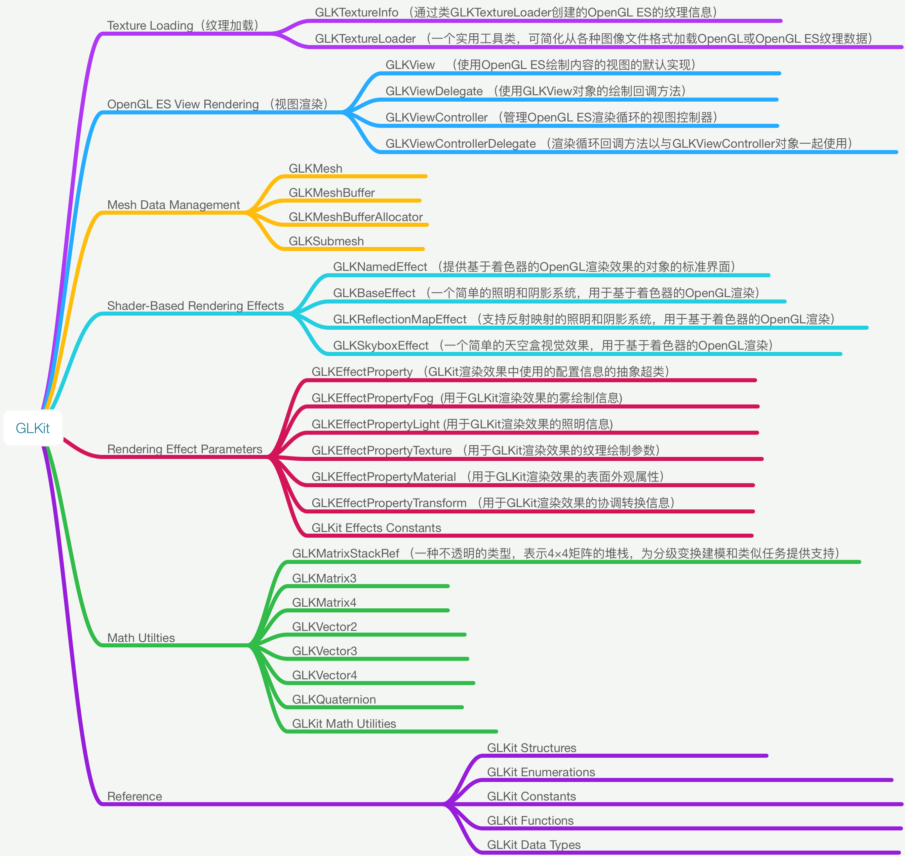

OpenGL ES - - GLKit（GLKBaseEffect）
Speed up OpenGL ES or OpenGL app development. Use math libraries, background texture loading, pre-created shader effects, and a standard view and view controller to implement your rendering loop.
加快OpenGL ES或OpenGL应用程序开发。 使用数学库，背景纹理加载，预先创建的着色器效果以及标准视图和视图控制器来实现渲染循环。

以一个简单的案例来使用 GLKBaseEffect
GLKBaseEffect is designed to simplify visual effects common to many OpenGL applications today.
GLKBaseEffect旨在简化当今许多OpenGL应用程序常见的视觉效果。GLKBaseEffect is program based and, with the binding of its underlying GLSL program
GLKBaseEffect是基于程序的，并且通过其基础GLSL程序的绑定GLKBaseEffect requires at least an OpenGL Core Profile. An appropriate context must be created and made current prior to instantiating and initializing GLKBaseEffect objects.
使用GLKBaseEffect的规范步骤是
(1) 分配并初始化GLKBaseEffect的一个实例
directionalLightEffect = [[GLKBaseEffect alloc] init];(2) 在效果上设置所需的属性
// Configure light0 directionalLightEffect.light0.position = lightPosition;
directionalLightEffect.light0.diffuseColor = diffuseColor;
directionalLightEffect.light0.ambientColor = ambientColor;
// Configure material
directionalLightEffect.material.diffuseColor = materialDiffuseColor;
directionalLightEffect.material.ambientColor = materialAmbientColor;
directionalLightEffect.material.specularColor = materialSpecularColor;
directionalLightEffect.material.shininess = 10.0;(3) 优选用顶点数组对象初始化顶点属性/顶点数组状态为要绘制的模型或场景
glGenVertexArraysOES(1, &vaoName); glBindVertexArrayOES(vaoName);
// 为每个顶点属性创建并初始化VBO
// 下面的例子展示了一个设置位置顶点属性的例子.
// 为每个额外的所需属性重复以下步骤：normal，color，texCoord0，texCoord1.
glGenBuffers(1, &positionVBO);
glBindBuffer(GL_ARRAY_BUFFER, positionVBO);
glBufferData(GL_ARRAY_BUFFER, vboSize, dataBufPtr, GL_STATIC_DRAW);
glVertexAttribPointer(GLKVertexAttribPosition, size, type, normalize, stride, NULL);
glEnableVertexAttribArray(GLKVertexAttribPosition);
...针对其他所需的顶点属性重复上述步骤
glBindVertexArrayOES(0); // unbind the VAO we created above(4) 对于每个绘制的帧：更新每帧更改的属性。 通过调用 - [GLKBaseEffect prepareToDraw] 同步更改的效果状态。用效果画出模型. 用效果画出模型
directionalLightEffect.transform.modelviewMatrix = modelviewMatrix; [directionalLightEffect prepareToDraw];
glBindVertexArrayOES(vaoName);
glDrawArrays(GL_TRIANGLE_STRIP, 0, vertCt);
详细代码：DEMO